Fish farming (new, with animal welfare information)
{kind=link}
{kind=link}
{kind=link}
{kind=link}
{kind=link}
{kind=link}
{kind=link}
Introduction - fish are also animals
Fish in organic farms - organic norms and standards regarding fish farming
The IFOAM norms and standards also cover fish and aquatic farming, and defines aquaculture as 'The managed production of aquatic plants and/or animals in fresh, brackish or sal water in a circumscribed (demarcated) environment. Organic aquaculture follows the same general rules as all other organic animals regarding feeding, breeding and human management. In addition, the following requirements should be met, when establishing or converting to organic aquaculture:
6.1.2 The conversion period of the production unit shall be at least one life cycle of the organism or one year, whichever is shorter.
6.1.3 Operators shall ensure that conversion to organic aquaculture addresses environmental factors, and past use of the site with respect to waste, sediments and water quality.
6.1.4 Production units must be located at an appropriate minimum distance from contamination sources and conventional aquaculture.
In aquatic ecosystems, the biodiversity of natural aquatic ecosystems should be considered, as well as the health of the aquatic environment, and the quality of surrounding aquatic and terrestrial ecosystems, This means that all relevant organic requirements regarding ecosystem management shall be met, and e.g. introduced and cultivated species should not escape out to the surrounding environment. Waste and nutrients should also not be let into the natural environment, and clearly all artificial fertilizers and pesticides are prohibited.
With regard to breeding of organic fish, their life should start in an organic unit. It can be permitted to buy in non-organic fish to an organic farming system, given that they will spend at least two thirds of their lives there, and die to the norms, artificially polyploided organisms or artificially produced monosex stock shall not be used. Only breeds and breeding techniques suited to the region should be used.
The general principle of feeding is that 'Organic aquatic animals receive their nutritional needs from good quality, organic sources', that is, they shall be fed organic feed. Until 31st Dec. 2014, a limited amount of non-organic feed can be used if there is no organic feed available, and in areas where organic aquaculture is not well established yet.
Use of water containing human excrement is prohibited, as it can mean transfer of certain diseases.
Feeding fish is a challenge, because some of them would live from fish and smaller animals in nature, and therefore they should be fed with these animals, although they can grow and seem fine on being fed with plant products.
Aquatic animal health and welfare
The general principle for animal health and welfare for aquatic animals is very much similar to that of other animals: 'Organic management practices promote and maintain the health and well-being of animals through balanced organic nutrition, stress-free living conditions appropriate to the species and breed selection for resistance to diseases, parasites and infections.
The same rules for use of veterinary medicine applies for fish, such as medicine for prevention is prohibited, and the first choice should be natural methods and medicines. Use of chemical allopathic veterinary drugs and antibiotics is prohibited for invertebrates (other aquatic animals than fish, e.g. shrimps). Synthetic hormones and growth promoters are prohibited for use to artificially stimulate growth and reproduction. Stocking density must not compromise animal welfare; this should be adjusted to age and breed of fish. Apart from this, it is said (Norms 6.6.6): 'Operators shall routinely monitor water quality, stocking densities, health, and behavior of each cohort (school) and manage the operation to maintain water quality, health, and natural behavior'.
When organic aquatic animals are transported and slaughtered, they should be subjected to minimum stress, and their species specific needs shall be respected, like with all other animals. The operator shall handle live organisms in ways which are compatible with their physiological requirements. Requirement 6.7.3 furthermore states:
Operators shall implement defined measures to ensure that organic aquatic animals are provided with conditions during transportation and slaughter that meet animal specific needs and minimize the adverse effects of (a) diminishing water quality, (b) time spent in transport; (c) stocking density, (d) toxic substances; (e) escape.
Aquatic vertebrates (fish) shall be stunned before killing, and it should be ensured that the equipment for this is sufficient to remove sensate ability and/or kill it.
Aquaculture
Aquaculture refers to the farming (propagation and rearing) of aquatic (water dwelling) organisms that include fin fish, mollusks, crustaceans and aquatic plants in controlled or semi controlled environments. The farming activities involve interventions such as stocking, feeding and protection from diseases and predators to enhance productivity.
However Aquaculture is used interchangeably with other terms like fish farming, pisiculture, pond fisheries and pond culture.
Mariculture refers to aquaculture done in marine (ocean) environments.
Some examples of aquaculture include:
- Algaculture: Production of seaweeds and other algae
- Fish farming: Farming of Fin fishes (e.g. Tilapia), shrimps, shellfish, cultured pearls etc.
Aquaculture in Kenya
(c) Mbugua Mwangi
| 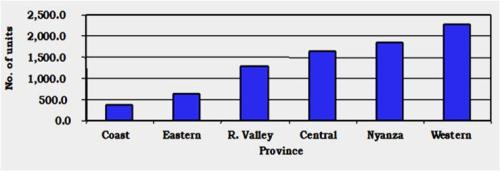 |
| Number of production units by province |
| (c) Mbugua Mwangi
|
| 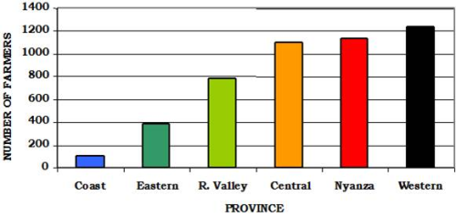 |
| Number of farmers by province |
| (c) Mbugua Mwangi |
|
There are two broad aquaculture divisions in Kenya:
- Marine aquaculture
- Fresh water culture
With an Indian Ocean coastline of about 600 km, mariculture is yet to realise any sensible development and therefore fresh water culture dominates aquaculture activities.
Fresh water aquaculture can be divided into:
- Cold water culture involving culture of Rainbow trout (Oncorhynchus mykiss) in highland areas
- Warm water culture involving the culture of Tilapine fishes, the African catfish, common carp and a variety of ornamental fishes in low land regions of the country
The total area under aquaculture in Kenya stands at 722.4 ha which include culture-based fisheries. National average productivity stands at about 5.84 Mt/ha/year while the total production from this utilized area average 420,000 kg per year.
The Fish Farming Enterprise Productivity Program (FFEPP), started in mid 2009 and aimed at increasing production of farmed fish from 4000 MT to over 20,000 MT in the medium term and over 100,000 MT in the long term. In the first year of the program, over 27000 fish ponds were dug; 200 ponds in each of 140 constituencies countrywide. This alone created a national short-term demand of about 28 million certified tilapia and catfish fingerlings and over 14,000 metric tonnes of formulated fish feeds. The multiplier effect resulting from farmers digging their own ponds is expected to increase the demand for fingerlings to over 100 million and the demand for fish feeds to 100,000 MT in the medium term (Charo-Karisa and Gichuri, 2010).
Considerations before investing in organic aquaculture
Thorough planning is therefore a must before any investment is made. Planning involves a detailed evaluation of the biological, economic, and socio-legal feasibility of production. Remember that economic considerations are as important as biological considerations in aquaculture. Socio-legal issues are potentially capable of limiting or even making it completely impossible to undertake aquaculture production.
It is essential to ascertain that the business concept is sound. Ask whether:
- There are adequate and profitable markets for proposed product(s): you can sell all the fish you are going to produce at a good price
- You have a suitable site for the proposed production: you have a good place were the pond can be established.
- You have enough resources to meet the projected targets: you have enough money or can get loans to pay all the investments and the startup costs.
- Your financial projections are realistic, robust and consistent: you can survive a period with low prices or low yields as expected.
- You have the expertise to produce: you know how to produce fish in an animal friendly way or know somebody who can help you with it.
- You can get adequate essential support services: you are sure that people you relay on, will be able to help you
- Your proposed undertaking is in accordance with organic principles, meets all the organic regulations, meets environmental, social and legal requirements: in your fishpond the fish has a good life, it does not pollute the surroundings, does not cause trouble with the neighbors and meets all community and country laws and regulations.
These questions should be answered in a well thought out BUSINESS PLAN and will provide you with a written document to serve as an overall plan for your operations.
Business planning is important to both new and established aquaculture enterprises. It enhances the chances for success and helps avoid costly mistakes. This plan will be helpful when looking for financiers, because many financial institutes require a formal business plan. A business plan should be a working document that is reviewed and updated at least on yearly basis. Importance of business planning:
- To convince possible financers that is safe to finance your business. Many potential and existing fish farmers have difficulty obtaining financing
- To make possible financers clear what you are going to do and that organic aquaculture is a good way of farming. Potential financiers may not be familiar with aquaculture as a viable investment
- Thinking and talking about possible problems, challenges and sollutions of the future enterprise prevents pitfalls afterwards. Proper planning for the business will help avoid mistakes
- Researching the possibilities for your organic products and possible customers to sell it to gives a clear view in the marketpossibilities. Proper planning for the business can also minimize risks associated with the market, production and financing
A business plan consists of:
- Description of the proposed production site (see pond construction)
- A Marketing plan/strategy: how much, to whom, at what price are you going to sell my organic fish. Description of production techniques/strategy: how are you going to produce, what equipment and installations are you going to use, is power (and it what form) needed, is transport available, is the young fish supply secured, will the water-quality be sufficient at all times, do you employ workers, are they skilled enough.
- Financial analysis of the proposed venture. How much money do the different financers supply and at what interest rate, for what period and how much should be paid back. Is there a penalty when you pay back earlier.
Where will I sell my fish? Surprisingly this question is asked very often by very many producers deep into their production cycle. Others ask this question after they have harvested their fish. Serious producers should ask and get answers to this question well before they go into production.
- What organic products does the market demand?
- What quantities does the market demand?
- What production resources do I have?
- Can the resources meet the proposed production?
- Which organic products am I capable of producing?
- What quantities can I realistically supply?
- When does the market want them supplied?
- What quality does the market require?
- Can I meet these standards?
- Is it possible to get a bulk buyer?
- How many buyers of organic fish are there in the region
- Does the demand in the market justify the intended production?
- What prices is the market ready to pay?
- Is it cost effective to produce at the offered prices?
- What competition exists in this field and how do I deal with it?
- Are the existing physical infrastructure (roads, power telecommunication etc) sufficient to meet the marketing needs for the produce?
After answering these, the entrepreneur should be able to make a decision on whether to continue or abandon the proposed production. If the entrepreneur decides to go on, then, it is time to develop a marketing strategy.
A marketing strategy is a plan to achieve the financial goals of the entrepreneur. The strategy should address; the products, product prices, advertisement and where to sell as regards marketing. Ideally, the products must be sold for more than the production cost and quantities that allow the producer to make gains and remain in business.
Marketing strategy involves:
i. Analyzing the market situation
ii. Formulating marketing goals
iii. Evaluating and selecting suitable marketing alternatives
i. Analyzing market situation
To do this, the entrepreneur should have a good knowledge of:
- Potential customer
- Modes of marketing (e.g. do you need to draw agreements, do you have to go through brokers etc)
- Product prices and their seasonality
- Product forms acceptable by the market
- Product quality requirements including regulation governing this
- Consumer preferences
- Quantity requirements
- Modes of payments and frequency
- All costs involved
- All competing products
- Alternative markets
- History regarding prices, demand, supply, product spoilage, product rejection etc
ii. Marketing goals
The goals must be realistic and achievable; otherwise the producer will be groping in darkness without purpose. In formulating marketing goals, the producer must ask, and be able to answer, the following:
- What is the targeted production?
- Is this achievable?
- What is the size of the target market in terms of geographical extent and consumer number?
- Is it possible to reach this market?
iii. Marketing alternatives
- Hotels, restaurants, retail markets and fish (sea food) shops including supermarkets: This could be out of reach of most small scale producers because they might not meet the frequency and quantity requirement of such outlets. However they can easily overcome this by forming marketing groups.
- Farm Gate Sales: Where local demand for fish is high, this offers a very good option. It removes the problems associated with taking the produce to distant markets. However it necessitates for proper storage facilities like deep freezers or cold rooms and some degree of processing and packaging.
- Sales to whole sellers, fish processors and large institutions: The advantage here is that large quantities can be disposed off at once and terms of supply and payment are normally stipulated in a legal contract. But this is only suitable for large scale producers or for farmers selling together (in a cooperative or other form of joint selling).
When planning for commercial aquaculture, the following aspects of production must be considered very critically:
i. Species to be produced
ii. Production site
iii. Production technology
I. Species to be produced
The choice of what to produce will be guided by:
a) Market preference
b) Ecological requirements of the species
c) Production technology of the species
d) Resources available to produce
The species to be produced must not only be marketable but also suited for the climate and be produced cost effectively. Different species require different climatic conditions to perform optimally. For example:
- Nile tilapia and African catfish require warm water of more than 25degC to achieve high growth potential. Growth of these fish is quite slow at elevations greater than 1600 meters because the water temperatures are very low. For best performance, average water temperatures of about 28degC are best. In Kenya, such regions are to be found in low land areas. In areas where temperatures are lower, a larger pond surface area can compensate for that. High sunlight intensity is also preferred for tilapia culture under semi-intensive production.
- Trout require cold, fast flowing clean water of less than 18degC for growing out and below 10degC for hatchery production. Such conditions in Kenya are to be found in high altitudes areas.
It is also important to know whether the species selected for production is adaptable to intended culture conditions and there is adequate knowledge of the reproductive biology, nutritional requirements, common diseases and parasites of the species. Also important is to ascertain that the species proposed for production is being profitably produced at commercial levels by other producers.
Other issues to consider, which are equally important are:
- Is there a reliable supply of good quality juveniles at a reasonable price, for stocking?
- Are you capable of establishing your own seeds (juveniles or ova) production capacity?
- Is there quality feed for the species and are the prices cost effective?
- Do you have a reliable and affordable source for specialized production supplies and equipment?
A good species should have the following characteristics:
- Adaptable to culture conditions
- Fast growth rate, from egg to market size
- Simple and inexpensive dietary requirements
- Hardiness and resistance to diseases and parasites
- Producer can have full control over the life cycle processes in captivity
- Easy market acceptability
- Availability of advanced and proven production technology
II. Production site
The proposed site should have the following characteristics:
- Be located in a region suitable and allowed for aquaculture production
- Have a climate suitable for the species intended for production (preferably indigenous to the area)
- Be well drained and protected from floods: when flooded the fish will escape/disappear.
- The topography and the soils should be suitable for the construction of the proposed production system
- Have adequate and preferably free flowing good quality water supply. This is the life line of aquaculture and is a must.
- Water is the key to a good site and not a matter of choice.
- Water should be available throughout the year
- Water must be free from pollution e.g. pesticides and other detrimental chemicals
- Accessible throughout the whole production cycle and have easy access to services and technical assistance
- Have adequate space for intended function and possible future expansion
- Located on site acceptable under local and environmental management legislation
- Have good Infrastructure like:
- Roads to bring supplies to the farm and take the products to the market? When export markets are targeted, air or water transport must be available.
- Air or water transport where export markets are the targeted
- Adeqiate (3-phase) power where intensive production systems are proposed
- Telephone service may be needed to run the enterprise efficiently
- Have good security
III. Production technology
The different species cultured have each their ecological requirements: feeding and breeding as well water quality. Aquaculture is done at different management and intensification levels. On small-holder farms it will mainly be in earthen ponds but even on a small scale the requirements and needs of the fish must be met and the production must add to the economics of the household. The choice of the production level will depend on:
- The species of choice
- Availability of the needed technology
- Potential prices of fish
- Available resources
- Available capital
- Availability of essential inputs for example feeds, power, skilled labour, professional expertise etc.
Depending on the proposed targets and the resources available, the producer will make a choice for an extensive or an intensive system:
In these systems little or no input is used in the production. Fish are stocked in cages, still water earthen ponds and other water impoundments (for example reservoirs) and let to fend for themselves. Low costs (recourses and labor), low stocking densities and thus low yields characterize the systems. The main cultured species are Tilapines (e.g. Oreochromis niloticus), Clarias gariepinus and Cyprinus carpio. These are low input-low out put production systems. Majority of the small scale, subsistence fish farmers in rural Kenya fall in this category. Production in these systems ranges between 500 and 1500 Kg/Ha/year. These systems can be organic because they don't use chemical fertilizers and artificial feed. The fish can be sold on the local market.
| 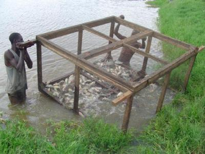 |
| Fish culture cages |
| (c) Mbugua Mwangi
|
| 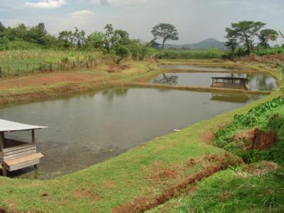 |
| Small Scale Fish Farm. |
| (c) Mbugua Mwangi
|
Semi-intensive systems
These systems form the bulk of aquaculture production in Kenya. In these systems still water earthen ponds and cages are used as holding units for fish culture. Still water pond culture uses the natural productivity of the water to sustain the species under culture. However to enhance productivity, the ponds are fertilized using both chemical and organic fertilizers at varying proportions to enhance productivity. Exogenous feeding using cereals bran and other locally available feeds is done to supplement pond productivity. Polyculture of Oreochromis niloticus, Clarias gariepinus and Cyprinus carpio is practiced with various combinations of species.
Commercial production in these systems ranges between 1 to 3 Kg/m2/year depending on the management levels individual farmers employ. There are Tilapia/Catfish producers in Western Kenya who have achieved productions between 6-10 Kgs/m2/year.
| 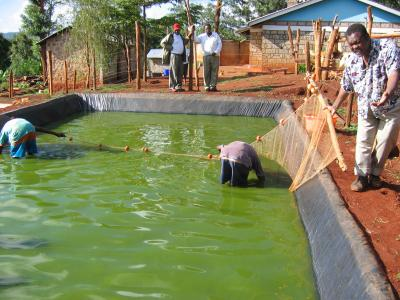 |
| A well fertilized pond in an ornamental fish farm in Kenya |
| (c) Mbugua Mwangi
|
| 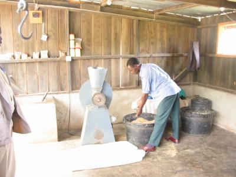 |
| Simple peletizing machine |
| (c) Mbugua Mwangi
|
In these highly industrialized systems water flows in and out continuously (flow through). This allows higher stocking densities. The systems require good supply of good quality water. Less land is required to produce the same quantity of fish as compared to extensive and semi-intensive systems. The systems employ mainly raceways, various types of tanks and floating cages as holding units. In these systems, more fish are produced per unit area by complementing or substituting the productivity in the culture units by feeding from outside using complete feeds (the feeds are specifically manufactured for the species under culture) and water aeration. Such operations require high initial capital investment and high operational cost.
They are mainly suited for high value fish. There are very few such operations in Kenya and most of them produce Rainbow trout. Production in these systems range from 10 to 50 kg/m2/year. This depends on the management levels employed by individual producers. This production can go higher with better management and quality feeds.
| 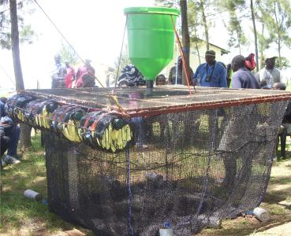 |
| Simple floating cage |
| (c) Mbugua Mwangi
|
| 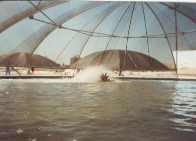 |
| A paddle wheel aerator in action in an intensive fish farm i |
| (c) Mbugua Mwangi
|
Economic analysis for proposed aquaculture venture (advanced)
NPV is given as:
| 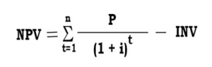 |
P = The net cash flow
i = The interest rate or the marginal cost of capital
t = Expected project life
INV = Initial investment
where:
PBP = payback period in years
I = initial investment
E = Accumulated profits before depreciation
| BEP for production quantity is given as: |
| 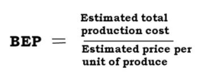 |
| BEP for produce price is given as: |
| 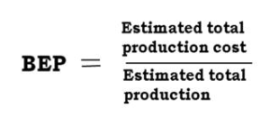 |
i). Return On Equity (ROE) indicates how much profit an investment generates with the equity.
ii). Return On Assets (ROA) is an indicator of how profitable an investment is relative to its total assets.
iii). Operating Profit Margin Ratio (OPMR) gives an indication of how much of the gross income is actually profit.
iv). Return On Investment (ROI) gives an indication of how an investment returns relate to the total invested capital.
These ratios are derived as:
i). ROE: Net income from operations divided by total equity
ii). ROA: Net income from operations divided by total
iii). OPMR: Operational gains plus interest divided by Gross income
iv). ROI: Net income from operation divided by Debts plus capital
Sensitivity of an investment to aspects of production is very important. Some of these aspects can be very volatile and their changes might have enormous effects on the profitability of projects. For investors to be able to make choices on where and how to invest, they need to know how likely variations on production output, cost of inputs or even changes in the market prices for the products will affect their future cash flows and net incomes.
Capital investment costs estimates:
- a) Cost of land
- b) Cost of construction of buildings and fish production facilities
- c) Cost of acquisition of equipment and machinery
Operational investment that included the cost incurred during production. These included:
- a) Quantities of inputs used in production
- b) Cost of inputs of production
- c) Payment of salaries and wages
- d) Costs of taxes, depreciation, permits and licenses
- e) Cost of acquisition of financing
Operational incomes that included:
- a) Products and production quantities
- b) Market price of products per unit value of product
For aquaculture investments, sensitivity can be analyzed by simulating changes (but not limited to) in:
- a) Produce prices
- b) Cost of feeds
- c) Production quantities
- d) Food conversion ratios and
- e) Survival rates of fish species under culture
Enterprise budgeting
- Over-capitalization
- Improper practices
- Poor planning
- Lack of foresight
- Lack of hindsight
Uses of an enterprise budget;
- It is used by Farm manger as a plan of operation before production
- Can be used as reference during production or after marketing
- It forms basis of a comparison of what really happened versus what was planned so as to inform on improvement
- Aid in cash flow planning, in controlling production costs and in determining the Break Even Prices and Yields
The basic structure of an Enterprise Budget consists of:
i) Gross Receipts
ii) Variable costs
iii) Fixed costs
| Depreciation refers to an expenditure allocated to a tangible asset's cost over its useful life. Depreciation is a non-cash expense and therefore it increases free cash flow while decreasing reported earnings. It is used in accounting to match the expense of an asset to the income the asset helps an investment earn. For example, if a farmer buys equipment for KShs 10,000 and expects it to have a useful life of 10 years, it will be depreciated over 10 years. Every year, the farmer will expense KShs 1,000 (assuming straight-line depreciation), which will be matched with the money that the equipment helps to make each year. Depreciation applies only to items that have a definable useful life. |
Total fixed costs is the sum of all fixed costs.
Returns above variable costs
- This is the difference between the GROSS RETURNS and the TOTAL VARIABLE COSTS.
- If this figure is positive, it means that all variable expenditures are covered and the enterprise is profitable at least in the short run.
- If they are negative, it is advisable to close the business if you can not reduce on the variable costs
Net returns
- This is the difference between the TOTAL COSTS and the GROSS RETURNS.
- Positive returns indicate that the enterprise is profitable even in the long term while negative returns indicate that the enterprise is not viable and should be abandoned if you cannot reduce on the costs.
- Farm size: 0.5 Ha
- Productivity: 3 kg/m2/year
- Av price of fish in KES/Kg: 250
| Item | Description | Unit | Unit price (KES) | Quantity | Total Amount |
| Gross Receipts | |||||
| Tilapia | Whole fish | kg | 200 | 12,000 | 2,400,000 |
| Catfish | Filet | kg | 300 | 3,000 | 900,000 |
| Gross Receipts | 3,300,000 | ||||
| Variable Costs (VC) | |||||
| Tilapia fingerlings | 1 month old | No. | 3 | 30,000 | 90,000 |
| Catfish fingerlings | 1 month old | No. | 5 | 10,000 | 50,000 |
| Wheat bran | kg | 30 | 35,000 | 1,050,000 | |
| Fertilizers | DAP | kg | 50 | 130 | 6,500 |
| CAN | kg | 50 | 270 | 13,500 | |
| Lime | kg | 20 | 1,300 | 26,000 | |
| Labour | Pond repairs and harvesting | KShs/day | 2000 | 150 | 300,000 |
| Interest on operation loan | KShs | 12% | 500,000 | 60,000 | |
| Total Variable Costs (TVC) | KShs | 1,596,000 | |||
| Net returns above TVC | KShs | 1,704,000 | |||
| Fixed Costs (FC) | KShs | ||||
| Depreciation | Ponds | KShs | 40,000 | ||
| Equipment | KShs | 10,000 | |||
| Machinery | KShs | 30,000 | |||
| Buildings | KShs | 10,000 | |||
| Water supply | KShs | 20,000 | |||
| Interest on capital investment | KShs | 30,000 | |||
| Total Fixed Costs (TFC) | KShs | 140,000 | |||
| TOTAL COSTS | KShs | 1,736,000 | |||
| Net returns above TC | KShs | 1,564,000 | |||
| Net returns/Ha | KShs/ha | 3,128,000 | |||
| Break Even Price | |||||
| Above TVC | KShs/kg | 106.4 | |||
| Above TC | KShs/kg | 115.7 | |||
| Break Even Yield | |||||
| Above TVC | kg/ha/year | 12,768 | |||
| Above TC | kg/ha/year | 13,888 |
Cash flow budget
- Makes you to think through your production and marketing plans for the year.
- Tests farming plans: will it be possible to produce enough income to meet all cash needs?
- Projects need for operating credit and ability to repay borrowed funds.
- Projects when to borrow money and when to repay.
- Helps in control of finances. By comparing the budget to actual cash flow, one can spot developing problems due to an unexpected drop in income or unplanned expenses, and opportunities to save or invest funds if net cash flow is higher than expected.
- Helps communicate farming plans and credit needs to lenders.
- Receipts from sales
- Operating cash expenses
- Living expenses
- Other expenses e.g. Personal withdrawals
- Debt interests and payments
- Capital sales
- Capital purchases
- Income tax payments
- Monthly cash flow budgets - for detailed financial planning
- Quarterly budgets - to develop estimates of cash needs over a several year period
- Annual budgets - used in investment analysis to determine cash flow over the life of the investment
- Beginning cash balance (BCB) - this is the amount of cash at hand at beginning of the production period.
- Receipts - cash revenue generated by sales of the crop or capital assets.
- Note: cash revenue items (receipts) + BCB are summed up to obtain Total cash inflow for the time period
- Operating cash expenses - expenses related directly to the quantity of fish produced. e.g. fingerlings, feeds, field labour, security personnel, repairs etc.
- Living expenses - this Includes what the owner of the enterprise spends on the self which can be referred to as nonfarm investments
- Other expenses - not related to actual production
- Scheduled debt payments - includes principal and interest payments for each separate loan.
- Cash available - this is the difference between Total cash inflow and total cash outflow
- New borrowing - if the cash available is negative, this means that there is insufficient cash generated during the period to meet all cash obligations and additional borrowing is needed for that time period.
- Cash balance - obtained by adding cash available to new borrowing. It becomes the beginning cash balance at the start of next time period. This must always be positive
- Debt outstanding - an accounting of the debt outstanding for each loan is kept at the bottom of the cash flow budget. Therefore, principal payments in a time can be subtracted out of the balance owed.
Table 2: An annual Cash Flow budget for a hypothetical fully operational tilapia /catfish farm
- Farm size: 0.5 Ha
- Productivity: 3 kg/m2/year
- Av price of fish in KES/Kg: 250
| Item | Yr 0 | Yr 1 | Yr 2 | Yr 3 | Yr 4 | Yr 5 | Yr 6 |
| Beginning cash Balance | 100,000 | 732,000 | 1,364,000 | 1,996,000 | 2,628,000 | 3,260,000 | |
| Tilapia | 2,400,000 | 2,400,000 | 2,400,000 | 2,400,000 | 2,400,000 | 2,400,000 | |
| Catfish | 900,000 | 900,000 | 900,000 | 900,000 | 900,000 | 900,000 | |
| Total Cash inflow | 3,400,000 | 4,032,000 | 4,664,000 | 5,296,000 | 5,928,000 | 6,560,000 | |
| Operating cash expenses | |||||||
| Tilapia fingerlings | 50,000 | 50,000 | 50,000 | 50,000 | 50,000 | 50,000 | |
| Catfish fingerlings | 900,000 | 900,000 | 900,000 | 900,000 | 900,000 | 900,000 | |
| Wheat bran | 1,050,000 | 1,050,000 | 1,050,000 | 1,050,000 | 1,050,000 | 1,050,000 | |
| Fertilizers | 6,500 | 6,500 | 6,500 | 6,500 | 6,500 | 6,500 | |
| 13,500 | 13,500 | 13,500 | 13,500 | 13,500 | 13,500 | ||
| Lime | 26,000 | 26,000 | 26,000 | 26,000 | 26,000 | 26,000 | |
| Interest on operation loan | 60,000 | 60,000 | 60,000 | 60,000 | 60,000 | 60,000 | |
| Total Operating cash expenses | 2,406,000 | 2,406,000 | 2,406,000 | 2,406,000 | 2,406,000 | 2,406,000 | |
| Living expenses | 100,000 | 100,000 | 100,000 | 100,000 | 100,000 | 100,000 | |
| Other expenses | 50,000 | 50,000 | 50,000 | 50,000 | 50,000 | 50,000 | |
| Scheduled debt repayments | |||||||
| Interest on Investment loan | 12% | 150,000 | 120,000 | 90,000 | 60,000 | 30,000 | |
| Repayment | 5 yrs | 250,000 | 250,000 | 250,000 | 250,000 | 250,000 | |
| Operating principle | 100,000 | 100,000 | 100,000 | 100,000 | 100,000 | 100,000 | |
| Interest on operation loan | 12% | 12,000 | 12,000 | 12,000 | 12,000 | 12,000 | 12,000 |
| Total Cash Outflow | 2,668,000 | 2,668,000 | 2,668,000 | 2,668,000 | 2,668,000 | 2,668,000 | |
| Cash available | 732,000 | 1,364,000 | 1,996,000 | 2,628,000 | 3,260,000 | 3,892,000 | |
| New Borrowing | |||||||
| Cash Balance | 732,000 | 1,364,000 | 1,996,000 | 2,628,000 | 3,260,000 | 3,892,000 | |
| Outstanding debts | |||||||
| Investment | 1,250,000 | 1,000,000 | 750,000 | 500,000 | 250,000 | 0.0 |
Commercial aquaculture species in Kenya
| 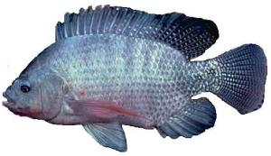 |
| Nile tilapia; max. length: 60 cm |
| (c) Mbugua Mwangi, Kenya
|
- Tilapia are indigenous to Africa, but have been introduced in many parts around the world.
- They are disease-resistant
- They are prolific breeders and reproduce easily under culture conditions
- Feed on a wide variety of foods and tolerate poor water quality with low dissolved oxygen levels.
- Can grow in brackish water and some will adapt to sea water
- Mainly grow under semi-intensive systems as monoculture, males only monoculture or polyculture with African catfish
- Optimum temperature range 27 - 30degC
- Very popular in Kenya and have a good market in world
- Fillets yield is from 30% to 37%, depending on fillet size and final trim
| 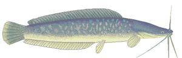
|
| African catfish; average length: 1 - 1.5 m |
| (c) Courtesy of Sagana Aquaculture Centre Kenya
|
- Indigenous to Africa.
- Can be described as omnivorous eating vegetable matter, zooplankton, insects, snails, tadpoles, leeches, small fish etc.
- Very hardy and can survive in low oxygen waters
- Can grow in brackish water in salinities of 10ppm
- Has ability to breath atmospheric oxygen
- Do not breed in captivity and artificial spawning is used
- Grows very quickly if adequate high protein feed is available.
- Few bones; has higher fillet percentage than tilapia
- Mainly grown in semi-intensive polyculture systems with tilapia
- Optimum temperature range 25 - 27degC
A good candidate for rural aquaculture in developing countries
| 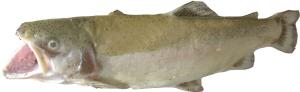
|
| Rainbow trout; average length: 51 - 76 cm |
| (c) Mbugua Mwangi
|
- Native of North America but has been introduced and farmed all over the world
- A carnivorous fish which in natural waters consumes insects, crustacean and other small animals
- Grows well in cool fast flowing waters, 10 - 18degC, with high oxygen content
- Under culture conditions, require a water flow rate of 1 l/min/kg without aeration
- Trout will not spawn naturally in aquaculture systems and artificial spawning is used
- Produced in intensive systems in tanks and raceways
- Restricted to highland areas in tropical regions where favorable conditions allow
- Requires high quality feed, >40% protein.
- High market price, especially when fresh
- Fine bones; high fillet percentage and excellent when smoked.
| 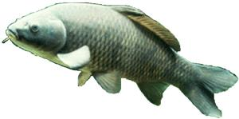 |
| Common carp; max length: 1.5 m |
| (c) Courtesy of Sagana Aquaculture Centre Kenya
|
- An exotic species that has established itself in natural water bodies in Kenya
- An omnivore feeding onorganisms in mud at pond bottom, makes the pond water muddy.
- Eats a variety of supplementary foods including bran.
- Very limited aquaculture production in Kenya where they are grown under semi-intensive systems
- Attains a large size and does not usually overpopulate a pond.
- Optimum temperature range, 23 - 26degC
- Poor market in Kenya due to intramuscular bones but popular in Asia.
Farming Tilapia
Tilapia is the generic name of a group of cichlids endemic to Africa. The important aquaculture genera in Kenya are Oreochromis, and Tilapia. All tilapia species are nest builders; fertilized eggs are guarded in the nest by a brood parent. Sarotherodon and Oreochromis are mouth brooders; eggs are fertilized in the nest but parents incubate them in their mouths including several days after hatching. For the Oreochromis, only females practice mouth brooding, while in Sarotherodon, either the male or both male and female mouth brood.
| 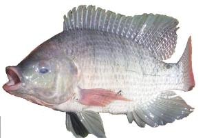 |
| Nile tilapia |
| (c) Mbugua Mwangi, Kenya
|
Tilapia farming involves the culture of following species:
i. Oreochromis niloticus
ii. Oreochromis mossambicus
iii. Oreochromis aureus
iv. Oreochromis spilurus
v. Oreochromis andersonii
vi. Tilapia zillii.
vii. Tilapia rendalli
- Omnivorous are: O. mossambicus, O. niloticus, O. spilurus, O.andersonii and O. aureus.
- Phytoplankton feeders: O. leucostictus, O. macrochir, O. esculentus, O. alcalicus grahami, and S. galilaeus
- Macrophytes (feed on larger plants) feeders: T. rendallii and T. zillii.
Fecundity refers to the number of eggs produced by a fish in a spawn. This applies well for monocyclic species, that is, once a year breeders. Tilapias are polycyclic (many times breeders) and their ovary may contain eggs at different stages of maturity.
In substrate brooding (nest building) tilapias, fecundity is much higher than mouth brooders. Other characteristics that differentiate substrate brooders (Tilapia) and mouth brooders (Oreochromis) are:
| Characters | Tilapia | Oreochromis |
| Fecundity | high | low |
| Egg diameter (mm) | 1-1.5 | up to 5.0 |
| Yolk percentage | less than 25% | up to 45% |
| Yolk colour | pale yellow | orange |
| Size of fry at feeding | 5-6 mm | 9-10 mm |
| Courtship | prolonged (monogamous) | brief (polygamous) |
| Juvenile mortality | high | low |
| Longevity | up to 7 years | over 9 years |
Temperature affects fish distribution, survival and growth, rate of development, reproduction and even susceptibility to diseases. Various species and strains of tilapia differ in tolerance to low temperatures, but growth is generally limited at water temperatures below 16degC and most become severely stressed at 13degC. Death occurs from 12degC with few surviving temperatures below 10degC. Most will not feed or grow at water temperatures below 15degC and will not spawn below 20degC. The normal water temperature should be between 20 to 30degC. Metabolic rate rises at higher temperatures which lead to death.
Tilapias are able to tolerate low levels of ambient oxygen. Usually, well fertilized ponds will have low levels of oxygen early in the morning. Night activities are dominated by respiration and decomposition which reduce DO. Larger fish are less tolerant than juveniles. This could be due to the difference in their metabolic demand. The optimal DO for tilapia culture is 4 mg/litre (50%) and should not go below 2.3 mg\litre.
The Nile tilapia is the least saline tolerant of the commercially important species, but grows well at salinities up to 15 ppt. The Blue tilapia grows well in brackish water up to 20 ppt salinity, and the Mozambique tilapia grows well at salinities near or at full strength seawater
Tilapia can survive in pH ranging from 5 to 10 but do best in a pH range of 6 to 9.
Massive tilapia mortality will occur within a few days when the fish are suddenly exposed to water with unionized ammonia concentrations greater than 2 mg/l Prolonged exposure (several weeks) to un-ionized ammonia concentration greater than 1 mg/l causes deaths, especially among fry and juveniles in water with low DO concentration.
Mixed-sex culture
Species such as Tilapia zilli, T. hornorum, or T. mossambica are not suitable for mixed-sex culture because they reach reproductive maturity at 2 to 3 months at an unmarketable size of about 30 grams. Those that are suitable for this culture are O. nilotica and O. aurea which reach reproductive maturity at 5 to 6 months. Two to three crops of fish can be produced annually in Kenya depending on the water temperatures.
Mono sex culture
- Hybridization
- Sex-reversal and
- Manual sexing.
None of these methods is 100 percent effective, and a combination of methods is recommended. Hybridization can be used to produce better results of males only. The hybrids can then be subjected to hand sexing and/or sex-reversal treatment. Sex-reversal requires obtaining recently hatched fry and rearing them in tanks or hapas where they are subjected to hormone laced feed for about three weeks.
Hormonal sex reversal needs a tank-based or hapa-based hatchery that will allow fry to be collected at the yolk sac or first feeding stages (no later than one week after they have been released from the female). The healthy fry of uniform size are transferred to the tank or hapa where you will feed them with hormone-laced diet for 21-28 days. The feed is prepared as follows:
- Mix 30 - 70 mg of hormone (methyl or ethynyl testosterone) in 700 ml of 95% neutral ethanol
- Add 700 ml of hormone solution to each kg of finely ground feed then mix thoroughly and dry. At this stage you may add any needed supplements
- This feed should be kept under refrigeration if it is not going to be used immediately
- Feed the fry at a rate of 10 - 30% of body weight per day, at least four times a day for 21 - 28 days.
- The fry must eat this feed to sex-reverse
This is not in accordance with the organic principles and therefore cannot be applied.
Manual sexing (hand sexing) involves separating males from females by visual inspection of the external urinogenital openings. Reliability of manual sexing depends on the skill of the workers, the species to be sorted and fish sizes. Experienced workers can easily sex 20-gram fingerling T. hornorum and T. mossambica, 30-gram T. nilotica, and 50-gram T. aurea. Tilapia males are preferred for culture because they grow faster than females. Females use considerable energy in reproduction and do not eat when they are incubating eggs. All-male culture permits the use of longer culture periods, higher stocking rates and fingerlings of any age. High stocking densities reduce individual growth rates, but yields per unit area are greater. If the growing season can be extended, it should be possible to produce fish of up to 500 grams. Expected survival for all-male culture is 90 percent or greater.
Females included in a population of mostly male tilapia affects the maximum attainable size of the original stock in grow-out. A stocking rate of 2/m2 is commonly used in Kenya to achieve yields of 1kg/ m2. At this stocking rate the daily weight gain will range from 1.5 to 2.0 grams. Culture periods of 6 months or more are needed to produce fish that weigh close to 500 grams. There are cases in Kenya where stocking densities of 6 juveniles/ m2 is practiced with a production of up to 3kg/m2. Higher stocking densities will require water aeration and sub-optimal feeding rates may have to be used to maintain suitable water quality.
Polyculture
In Kenya tilapia are frequently cultured with other species, mainly catfish (Clarias gariepinus) to take advantage of many natural foods available in ponds and to produce a secondary crop, or to control tilapia breeding. Polyculture uses a combination of species that have different feeding niches to increase overall production without a corresponding increase in the quantity of supplemental feed. Polyculture can improve water quality by creating a better balance among the microbial communities of the pond, resulting in enhanced production.
Other possible polyculture combinations that can be done in Kenya include:
- Tilapia and prawns (Macrobrachium rosenbergii): In this case, survival and growth of tilapia and prawns are independent. Feed is given to meet the requirements of the fish. Prawns, which are unable to compete for the feed, utilize wasted feed and natural foods that result from the breakdown of fish waste.
- Tilapia and large mouth bass (Micropterus salmoides): The bass which is carnivorous, control the breeding of tilapia in mixed sex culture. This allows the original stock to attain a larger market size. Predators must be stocked at a small size and percentage to prevent them from depleting the tilapia stock.
Where the natural pond productivity is enhanced through water fertilization, reasonable production can be achieved without exogenous feeding. Although yields will be lower than those obtained with exogenous feeding, fertilization will reduce the quantity and expense of feeding. Application of an inorganic fertilizer high in phosphorus should be done prior to stocking fish to create an algal bloom. Tilapia productivity is stimulated mainly by an increase in phosphorus and to a lesser extent by an increase in nitrogen. The inorganic fertilizers used in Kenya are DAP (Diammonium phosphate) and CAN (Calcium ammonium nitrate) and are not allowed in organic fish farming, while animal manure is allowed.
Animal manure is widely used in Kenya in fish production in earthen ponds. The quality of manure as a fertilizer varies depending on the source animal and the quality of feed fed to the animal. Pig, chicken and duck manures increase fish production more than cow and sheep manure. Animals fed high quality feeds (grains) produce manure that is better as a fertilizer than those fed diets high in crude fibre. Fine manures provide more surface area for the growth of microorganisms and produce better results than large clumps of manure. The manure should be composted before being used in the fish pond. It spreads easier and does not take oxygen from the water for the process of composting while minerals are kept in the material during composting
Manure should be distributed evenly over the pond surface area. Accumulations of manure on the pond bottom produce low oxygen conditions (during decomposition) in the sediment resulting to reduced microbial activity and sometimes result in the sudden release of toxic chemicals into the water.
| 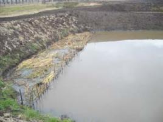 |
| Manure crib |
| (c) Mbugua Mwangi, Kenya
|
Methods of applying manure
- Crib method: A compost crib constructed using wooden sticks at one or more sides of the pond. It helps fertilize the water gradually. The manure in the crib requires frequent turning to facilitate the release of nutrients.
- Bag method: A bag is filled with manure and tied to the corner of the pond. The bag is shaken weekly or daily to release nutrients.
Manure application rates for ponds
Manure application rates depend on the size of the pond, which is expressed as surface area of the water in the pond. The recommended rate is 50 g of dry matter per m2 per week i.e. 5 kg/100 m2/week.
The maximum rate depends on the quality of the manure, the oxygen supply in the pond and water temperature. If early morning DO is less than 2 ppm, manuring should be reduced or stopped until DO increases. When water temperatures are less than 18deg C, manure application should be discontinued. At low temperatures the rate of decomposition decreases and manure may accumulate on the pond bottom. A subsequent increase in temperature could then result in oxygen depletion.
Agricultural Lime
- Used to improve soil quality, which helps the organic and chemical fertilizers to work better. It also helps to clear up muddy water.
- In red soils; about 20 kg per 100 m2 can be applied. Black cotton soils may require a little more.
Some characteristics of organic and chemical fertilizers
| Allowed in organic fish farming: Organic (farm manure) | Not allowed in organic fish farming: Chemical: DAP, Urea, MAP, TSP |
| Contains trace minerals and vitamins. | Contains only what the label says |
| Uses oxygen to decompose. | Does not use oxygen when dissolving |
| Is highly variable in composition depending on feeds given to the animals and bedding used | Varies little in composition from what is indicated on the label. |
| Can help reduce turbidity due to clay silt in the ponds | Does not reduce turbidity |
| Can help reduce seepage in ponds | Does not act on seepage |
| Some of the ingredients can be consumed directly by the fish | Not directly consumed by the fish |
| 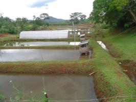 |
| Tilapia and Catfish farming integrated with poultry |
| (c) Mbugua Mwangi, Kenya
|
Maximum tilapia yields are obtained from the manure output of 5,000 to 5,500 chickens/ha, which deliver 100 to 113 kg (dry weight) of manure/ha/day. Several crops of chickens can be produced in one fish production cycle.
Duck/fish farming
| 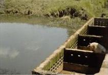 |
| Pig house with fish pond |
| (c) Stephen Gikonyo, Kenya
|
Ducks are grown on ponds at a density of 750 to 1500/ha. The ducks are raised in confinement, fed intensively, and allowed a small portion of the pond where they forage for natural foods and deposit their manure. Ducks reach marketable size in 10 to 11 weeks and therefore staggering production cycles is needed to stabilize manure output.
Pig/fish farming
| 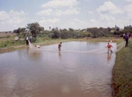 |
| Pond harvesting using a sein net |
| (c) Mbugua Mwangi, Kenya
|
Approximately 60 to 70 pigs/ha are required to produce a suitable quantity of manure (100 to 115 kg of dry matter/ha/day) for tilapia production. The pigs are usually grown from 20 to 100 kg over a 6-month period. In certain cultures and religion, where pigs are considered unclean, used of pig manure might reduce the marketability of the fish.
Further information on how to integrate animal production with fish culture under www.agromisa.org
Harvesting
- Fish should be checked for off flavours
- Fish should be harvested during cool weather
- Harvesting and transportation equipment should be set up well in advance to ensure reduced stress and minimal fish mortality.
Tilapias are best harvested by seining for partial harvesting and complete drainage for complete harvesting. Once harvested, fish should be handled with care and transported to the market while still fresh.
Growth and yields
Under proper management and optimal conditions, 1-gram fish are cultured in nursery ponds to 20 to 40 grams in 5 to 8 weeks and then stocked into grow-out ponds. In mono-sex, males can reach 200+ grams in 4 to 5 months, 400 + grams in 5 to 6 months, and 500+ grams in 8 to 9 months. Dress-out percentage on tilapia is low compared to species such as trout and catfish. Tilapias have a dress-out of 51 to 53 percent of live weight for whole-dressed fish (head-off) and 32 to 35 percent for filets.
Diseases
Tilapias are more resistant to viral, bacterial and parasitic diseases than other commonly cultured fishes. Few diseases and mortalities have been reported in semi intensive tilapia farms in Kenya. This could due to low stocking densities in these systems. Lymphocystis, columnaris, whirling disease, and hemorrhagic septicemia may cause high mortality, but these problems occur most frequently at water temperatures below 11degC. The most important cause of mortalities is anoxia resulting from blooms of algae. Sudden lowering of temperatures to below the tolerance levels, which can happen during the rainy seasons, can lead to problems including mortalities.
Hatchery Management and Tilapia Fingerling Production
Three methods of tilapia fingerlings production are commonly practiced in Kenya:
- open ponds (most commonly used)
- tanks
- hapas in ponds (net enclosures)
For these methods, fry are collected from the spawning units and stocked into fertilized ponds for rearing to the fingerling stage before they are stocked into grow out ponds.
| 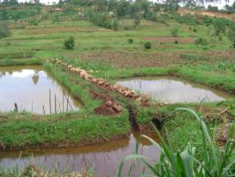 |
| Poorly constructed earthen ponds |
| (c) Mbugua Mwangi, Kenya
|
| 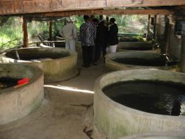 |
| Circular tanks for a trout hatchery |
| (c) Mbugua Mwangi, Kenya
|
Tank-based hatcheries are relatively expensive to set up. The tanks should be circular in shape and can be made of concrete, plastic, fiberglass or even metal. The tanks should be 1-6 m diameter with a water depth of 0.5-1 m. Diet should contain 30-40% crude protein and daily supply at 1-2% of body weight. Fry can be collected every 10 - 14 days. Yields of up to 400-3,000 fry/m2/month can be realized using this method. Tanks are easy to manage but are relatively expensive to set up compared to ponds and hapas.
A hapa is a cage like net impoundment placed in a pond for holding fish for various purposes. They are made of fine mesh netting material. The mesh size is such that the fry or fish inside can not escape. The ideal hapas is 3 m long, 3 m wide, and 1.5 m deep. When using hapas to generate fingerlings, stock brooders should be weighing about 100 to 200 g at a ratio of about 1:5 to 1:7 males to females. Stock the brooders at a density of 4 - 5 brooders / m2. Hapas should be inspected for fry every day. Remove the fry using a scoop net after two week and stock them into tanks, other hapas, or in a rearing pond. Fry-production in hapas range from 150 to over 880/ m2/month. Fry should be fed 4 times/day until the fry reach the desired size (5 g). Use a diet in powder form at the rate of 5-10% of the total body weight per day
| 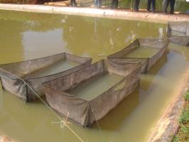 |
| Breeding hapas in a fish pond |
| (c) Mbugua Mwangi, Kenya
|
Production in hapas range from 150 fry/m2/month to over 880 fry/ m2/month.
| 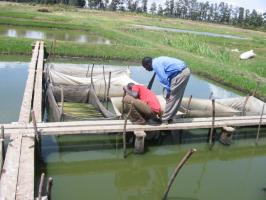 |
| Inspecting tilapia breeding hapas |
| (c) Mbugua Mwangi, Kenya
|
Feeding
Advantages of using this method are easy handling of fry ad brooders, a high production per unit, uniform fry of the same age, minimal losses and hapas can be set up in a pond with other fish.
Disadvantages of the hapa method tha it is more demanding than open ponds and tanks, mortalities may occur due to agressiveness during spawning, the fish has to be fed, poor water quality is likely due uneaten feed and fish waste and mesh will get clogged limiting water circulation and need periodic scrubbing. In stormy weather hapas can be destroyed and the material will degrade in sunlight and need replacing. Fish may easily escape from damaged hapas.
Disadvantages of the hapa method
- Management is more demanding compared to the other methods
- Mortalities may occur due to agressiveness during spawning
- Feeding is a must
- Hapas can be destroyed during stormy weather
- Hapa material will degrade in sunlight and need replacing
- Fish may easily escape if the hapa is damaged
- Localised poor water quality is likely due uneaten feed and fish waste
- Hapa mesh will get clogged limiting water circulation and need periodic scrubbing
Pond design and construction for semi-intensive aquaculture
- What gets in or out
- When it gets in or out
- How it does this
- How much gets in or out
- Rate of getting in or out
- Have water in quantity and quality needed for the proposed production. Not in a pollution prone area.
- Suitable topography to allow cost effective setting up the proposed production facility and have adequate room for possible future expansion
- Have soil suitable for pond construction (if ponds are planned).
A simple test of the suitability of a soil for pond construction:- Dampen a handful of soil with water. Use only enough water to dampen the sample (do not saturate it).
- Squeeze the sample tightly in your hand.
- Open your hand:
- If the sample keeps its shape, it is probably good enough for building a pond (sufficient clay present).
- If the sample collapses and does not keep its shape, it is probably not good enough for building a pond (too much sand present)
- The site be in a region or area that is suitable and allowed for aquaculture production
- Well drained and away from flood-prone areas or at least having potential for flood control
- Allow for acceptable effluent disposal as required by environmental management authorities
- Have a climate suitable for production of the intended species
- Have accessibility to a good and all-weather market
- Have easy access to services and technical assistance
The final size of a fish farm is determined by: Amount of water available, the target production and the available capital. Intensive systems require less land compared to semi-intensive systems, to produce the same quantity of fish but require more capital to invest.
The number, size and the shape of ponds will be determined by:
- Topography of the land and the shape and size of the land. Rectangular ponds are easier to manage
- Intended use of the pond. Fingerling ponds should be smaller than fattening ponds.
- The species to be produced
- Frequency of harvest
- Target quantity per harvest
- Whether juvenile production is intended etc.
During the process of designing ponds, decisions on the following should be made:
- Total area of the pond water surface (this is the actual pond size)
- The length and the width of the pond water surface
- The water depth and the total pond depth at the deep end
- The slope of the dykes and the pond bottom
- The size of the free board (height of dyke above water level)
- The width of dykes
| 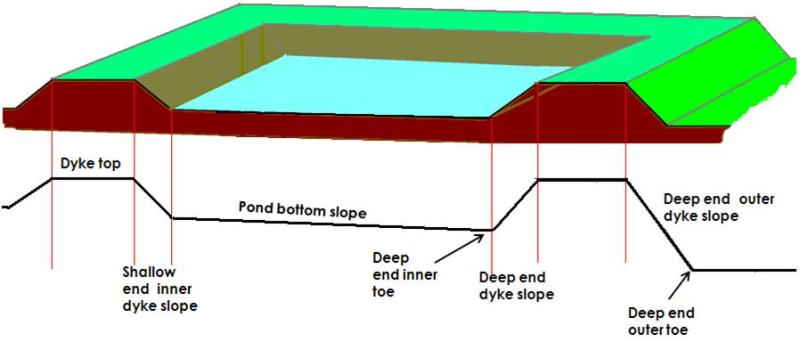 |
| A cross section on an earthen fish pond showing the slopes and the dykes |
Once this is done, all other pond dimensions can be calculated. The diagram below gives the relationships between various pond dimensions.
Calculations for the following design are based on the assumptions that:
- Dyke slope: 50% (0.5)
- Bottom slope: 1% (0.01)
Based on the above, the following apply:
| 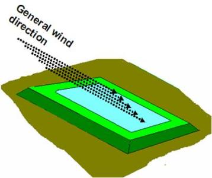 |
| Pond designed to take maximum advantage of the winds |
| (c) Mbugua Mwangi
|
| Total pond length | d+4c |
| Total pond width | e+4c |
| Shallow end water depth | a-x |
| Shallow end total depth | b-x |
| Shallow end bottom width | e-4a-4x |
| Deep end bottom width | e-4a |
| Dyke top-Inner toe horizontal distance at deep end | 2b |
| Dyke top-Inner toe horizontal distance at shallow end | 2b-2x |
| 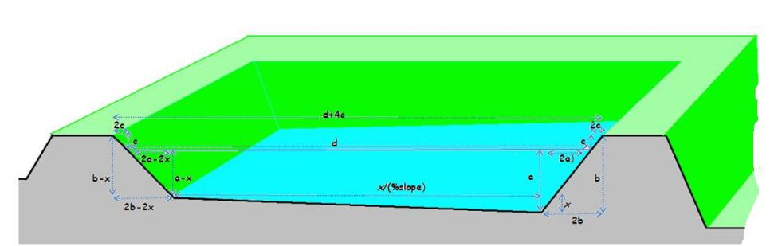 |
| Cross section of pond |
| (c) Mbugua Mwangi
|
| 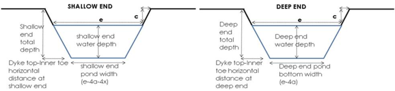 |
| 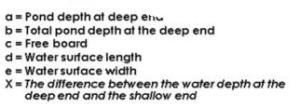 |
| Three-dimensional pond design |
| (c) Mbugua Mwangi
|
Steps in the construction
| 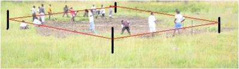 |
| Clearing vegetation from the pond site |
| (c) Mbugua Mwangi, Kenya
|
Step 5. Using spirit level, measuring tape, pegs and strings, mark out:
| 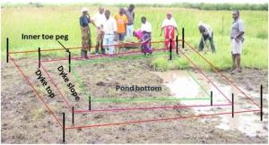 |
| A site pegged ready for digging and filling |
| (c) Mbugua Mwangi, Kenya
|
- The dykes
- Dyke slopes
- Inner and outer toes
- The pond bottom
Step 6. Using the determined pond depths and the actual elevations of the site, determine which areas need digging and which need filling. This is very important because it eliminates unnecessary movements of soil and thus keeps the construction cost at a minimum.
Step 7. Dig out the soil at the 'dig' areas and place it on the 'fill' areas. Most of the fill areas will be on the dyke position.
| 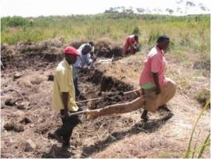 |
| Dig the soil from the dig areas and move it to the fill areas |
| (c) Mbugua Mwangi, Kenya
|
| 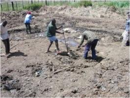 |
| Remove boulders and tree stumps from the pond area. |
| (c) Mbugua Mwangi, Kenya
|
| Make sure to remove boulders and tree stumps from the pond area. |
| 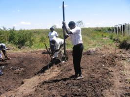 |
| Compact the soil properly |
| (c) Mbugua Mwangi, Kenya
|
Step 8. Once the soil is placed on the fill area, make sure that this soil is properly compacted. To achieve good compaction, place soil in layers not exceeding 15 cm in height and compact back to at least 10 cm. When constructing dykes, soil layers are place 20 cm inside on top of each other to reduce amount of work during dyke cutting.
Good dykes should:
- Be able to resist water pressure resulting from the pond water depth
- Be impervious
- Be high enough to keep the pond water from overflowing
| 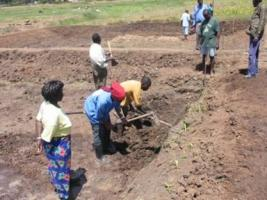 |
| Shape the dike slope and the pond bottom
|
|
|
To determine the height of the dyke to be built, take into account:
- The water depth you want in the pond
- The freeboard (upper part of a dyke that is never under water). It varies from 0.25 m for very small ponds to 1 m for very large ponds
- Dyke height that will be lost during soil settlement. This varies from 5 to 20 percent of the construction height of the dyke
- Dyke width depending on the water depth and the role the dyke will play for example transportation in the farm
- It should be at least equal to the water depth, but not less than 0.60 m in clay soil or 1 m in somewhat sandy soil
- It should be wider as the amount of sand in the soil increases
| 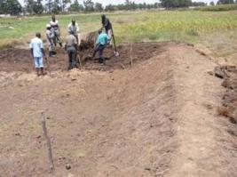 |
| Getting the desired slope and uniformity |
| (c) Mbugua Mwangi, Kenya
|
Dyke slopes should be determined bearing in mind that:
- Steeper slopes erode easily
- The more the soil becomes sandy, its strength decreases, and slopes should be more gentle
- The bigger the pond size, the stronger is the erosive power of the water waves
- As the slope ratio increases, the volume of earthwork increases, and the overall construction cost and the land area required for the ponds increases
| 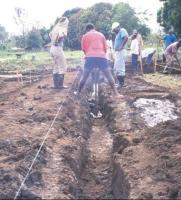 |
| Fill the trench with moist clay and compact thoroughly |
| (c) Courtesy of Ngugi C. N., Kenya
|
The ability of the dykes to hold water can be enhanced by:
- Using good soil that contains enough clay (about 25% clay is best)
- Building a core trench (clayey core) within the dyke where the soil is pervious
- Building a cut-off trench when the foundation is permeable
- Proper compacting of the soil
- Ensuring that the thickness of the dyke is appropriate
Newly built dykes should be protected against erosion by planting a grass cover on the crest of the dykes, on outer slope and on the free board.
The pond bottom should be constructed such that water drains towards a harvesting sump at the deepest part of the pond, in front of the outlet, where all the fish can be concentrated during complete draining of the pond.
| 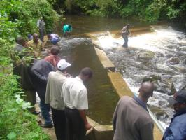 |
| Water intake weir for a trout farm |
| (c) Mbugu Mwangi, Kenya
|
Main water intakes are used for the overall regulation and transportation of water to the fish farm. They ensure constant supply of water and allow regulation of the amount of water to the farm allowing for diversion of what is not needed.
When setting up main the intake, consider:
- The levels of the water source (river, stream, etc.) in relation to the elevations of the water supply structure and the ponds themselves and where the water will eventually leave the farm.
- The depth from which you want to take the water (surface, lower levels or the complete depth of the water supply source) at the intake
| 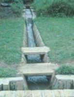 |
| An open water supply canal lined with concrete slabs. |
| (c) Courtesy of Ngugi C. N., Kenya
|
There are several types of canals depending on their use:
- Feeder canals to supply water from the main water intake to the fish ponds
- Drainage canals to take away water from the fish ponds
- Diversion canals to divert excess water away from ponds
- Protection canals to divert water runoff/floods away from the fish farm
All canals should be well designed to have the required water carrying capacity at the required rate. If the water quantity is low and the rate of delivery is slow, pond will take too long to fill.
| 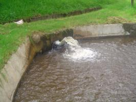 |
| Water inlet for a trout raceway |
| (c) Mbugua Mwangi, Kenya
|
There are two common types of inlet structures used in Kenya:
- Pipe inlets
- Open inlets
When designing and constructing an inlet:
a) Place the inlet at the shallow end of the pond
b) Make sure that the bottom level of the inlet is at the same level as the bottom of the water feeder canal and at least 10 cm above the maximum level of the water in the pond
c) Design the inlet structure to be horizontal, without a slope.
d) Make it wide enough to fill the pond completely in reasonable time
e) Make it such that water splashes and mixes as much as possible when entering the pond.
f) Provide a screen to keep unwanted fish and other organisms out
g) Control mechanism e.g. gate valves
Pond outlets are built to:
- Keep the water in the pond at its optimum level, which should be the maximum water level designed for the pond
- Allow for the complete draining of the pond and harvesting of the fish when necessary
A good outlet should ensure that:
- The time needed to drain the pond completely is reasonable
- The flow of the draining water is as uniform as possible to avoid disturbing the fish excessively
- Fish are not lost even during the draining period
- Water can be drained from any pond levels
- Allow for overflow of excess water
- Can be cleaned and serviced easily
- Construction and maintenance costs are kept at a minimum
In most cases, outlets have three main elements:
- Water control plugs, valves, control boards, screens or gates
- A collecting sump inside the pond, from which the water drains and into which the fish is harvested
- A conduit through the dyke through which the water flows out without damaging the dykes or the drainage canal
For small rural ponds, investing in elaborate outlets may not be necessary. Complete drainage of the pond can be done by cutting the dyke open at one of the deepest point of the pond. Repairing the dyke should not take more than two hours.
Materials that can be used to construct pond outlets and inlets include bamboo poles, PVC pipes, wood, bricks, cement blocks or concrete.
 |
| A cross section of a completed pond showing the position of various structures. |
| (c) Mbugua Mwangi
|
Pond construction costs
This will cost 15 x 8 x KShs X
X = wages per day
Note that the construction cost will vary with soil types and the weather. Rocky soils are hard to work on and construction will be more expensive. Black cotton soils are very difficult to work on during rainy weather and this too will increase construction cost.
Inlet canal and outlet canal: Include the cost of cement, sand, pipes, valves etc. Consider other incidentals costs especially due to the nature of the site and the prevailing weather.
Available pond construction experts in Kenya charge about KShs 150 to 500 per square meter of pond depending on the soil type and weather (2009 rates).
This should give the total cost of constructing one pond but not setting up the fish farm.
Remember that many but small ponds are more expensive to construct as compared to a few but larger ponds. Small ponds also waste a lot of space in comparison. However, very large ponds take long to fill and drain and are also difficult to manage.
Water Quality Management
Fish live and are totally dependent on the water they live in for all their needs. This means that we must understand the water quality requirements of the fish under culture very well.
- Suspended particles made of non-living particles and very small plants and animals, the plankton.
- Dissolved substances made of gases, minerals and organic compounds.
| 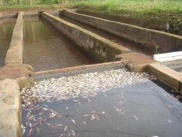 |
| Mass trout mortality due to poor water quality |
| (c) Mbugua Mwangi, Kenya
|
Temperature
Fish are "cold-blooded" and therefore assume the temperature of the water they live in. Water temperature is therefore the most important physical factor for fish survival and growth. Body temperature, and thus the water temperature, has an effect on level of activity, behaviour, feeding, growth, and reproduction of the fish. Each species has its tolerance limits and optimum range. When water temperatures are outside the optimum range, fish body temperature will either be too high or too low, animal welfare is at risk and fish growth will be affected or the fish will even die.
Tolerance limits and optimum temperature ranges for commonly cultured fish species of Kenya (Nile tilapia, African catfish, common carp and rainbow trout):
| Fish species | Lethal water temperature (degC) | . | Optimum temperature range for adults (degC) | Temperature range for spawning (degC) |
| Lower | Upper | |||
| Oreochromis nilotica (Nile tilapia) | 12 | 38 | 27-30 | 22-32 |
| Clarias gariepinus (African catfish) | - | - | 25-27 | 20-30 |
| Micropterus salmoides (Largemouth bass) | 2 | 35 | 23-30 | 17-20 |
| Cyprinus carpio (Common carp) | 2 | 36 | 23-26 (25) | Above 18 |
| Oncorhynchus mykiss (Rainbow trout) | Close to 0 | 22 | 15-17 (16) | 4-18 |
Turbidity
Fine solid particles suspended lead to a turbidity. Turbid Water can be said to be "cloudy". Turbidity can result from suspended solids (clay) or plankton.
Clay turbidity in pond water (muddy water) can be harmful to fish and limit pond productivity. Clay turbidity in pond can be controlled by:
- Treating affected ponds with animal manure at rates of 2.4 T/ha every three weeks or agricultural limestone, using recommended rates to improve soil pH and water alkalinity
- Avoiding stocking species that stir up pond bottom mud e.g. the common carp
- Designing water supply system such that muddy water can be diverted away from ponds
Plankton are small often microscopic aquatic plants (phytoplankton) and animals (zooplankton) found suspended in the water. Phytoplankton form the base of the food chain while zooplankton form the second link in the chain in aquatic systems such as ponds. [In addition to their role as food for fish in ponds, phytoplankton produce large amounts of oxygen for the pond during the day by photosynthesis providing dissolved oxygen (DO) in ponds. Low phytoplankton density in ponds means less food and DO for the fish. On the other hand, too much (algal bloom) lead to minimized sunlight penetration causing algal deaths. Less phytoplankton and decomposing plankton also lead to less food and DO for the fish. Good water quality, in relation to plankton therefore means water with just right bloom. Visibility in a pond with the right plankton density should be about 30 cm. [/p/]
How to measure turbidity:
- If it is well below your elbow, plankton turbidity is very high
- If it reaches to about your elbow, plankton turbidity is high
- If it reaches well above your elbow, plankton turbidity is low.
- pH and acidity
- Alkalinity
- Hardness
- Dissolved gases: oxygen, carbon dioxide, nitrogen, ammonia
- Salinity
- Essential nutrients: N, P, K
pH and Acidity
How to correct the pH of your pond water
Pond water with unfavourable pH can be corrected by:
- If the pH is below 6.5 (at sunrise), use lime and alkaline fertilizers
- If the pH is above 8.5 at sunrise, you can use acid fertilizers
How to keep soil pH at the right level
- Drying the pond for at least two weeks after each harvest before refilling and restocking.
- Applying lime (preferably agricultural limestone) to the pond after each harvest. Normally lime should be applied to the pond bottom before it is refilled, but if necessary, it can be applied to the water surface after filling the pond. Only recommended liming materials and application rates should be used.
Pond water pH varies over the course of a 24-hour day. This variation is related to the light intensity which is important in photosynthetic activity of phytoplankton.
- pH is lowest at sunrise and as photosynthesis increases as the light intensity increases, more and more carbon dioxide is removed from the water by the plants causing the pH to increase
- A peak pH value is reached in late afternoon.
- As the light intensity starts decreasing, which reduces photosynthesis less and less carbon dioxide is removed from the water; as respiration adds more carbon dioxide to the water, pH starts to decrease.
- At sunset, photosynthesis stops, but respiration continues for the rest of the night. More and more carbon dioxide is produced, and pH keeps decreasing until sunrise, when it reaches its minimum.
Dissolved oxygen in fish ponds
Dissolved oxygen (DO) is essential for respiration and decomposition. Dissolved oxygen in water comes from atmospheric oxygen and photosynthesis. The atmospheric oxygen diffuses and dissolves into the water. But the diffusion and its subsequent dissolves into water is a slow process. The major source of dissolved oxygen in ponds is photosynthesis. However this process depends on the amount of light available to the aquatic plants in water (Phytoplanktons). Oxygen production decreases during cloudy days and stops at night. It decreases with increasing water depth while the rate of the decrease depending on the water turbidity.
How to measure Dissolved Oxygen (DO)
DO can be measured by chemical or by electrical methods. Chemical methods rely on the use of kits which can be bought from shops dealing with laboratory equipment. They contain chemicals and equipment necessary to determine the DO content with sufficient accuracy for pond management purposes.
Dissolved oxygen (DO) requirements commonly farmed fishes in Kenya (in mg/l or percent saturation values)
| Fish species | Ova and juveniles | Adults | |
| Minimum DO level | Preferred DO level at least equal to | ||
| Trout | Close to 100% | 5 mg/l (50%) | 8 mg/l or 70% |
| Common carp | At least 70% | 3 mg/l (30%) | 5 mg/l or 50% |
| Tilapia | At least 70% | 2 mg/l | 4 mg/l or 50% |
| African catfish | At least 90% | 1 mg/l or less (aerial respiration) | 3 mg/l or 35% |
Fluctuating oxygen levels
From sunrise to sunset
- Photosynthesis increases the DO level
- DO production is higher on clear sky days than on cloudy days
- The higher the phytoplankton population, the higher the DO production.
At night,
- Photosynthesis does not take place
- Respiration and decomposition which are the main activities taking place, reduces the DO content until sunrise
- The higher the plankton population and dead matter, the faster the DO will fall
Where DO test equipments are not available, signs indicating reduced DO in pond water include:
- Fish not feeding well or even stopping feeding
- Fish coming to the water surface to breathe from the better oxygenated surface water (this is called piping).
The DO content of pond water can be increased in several ways:
- Through design and management
- Through structures that cause water to splash e.g. by use of cascades along the inlet canal and raised inlet pipes before the water gets into the ponds
- By use of mechanical aerators for the emergency aeration of pond water
A simple way to ensure a good supply of atmospheric oxygen to fish ponds is in the design of the pond. The ponds should be designed such that they take maximum advantage of the winds. The ponds should be designed so that the lengths are parallel to the direction of the prevailing winds.
- Flashing the pond by removing the less oxygenated bottom water and replacing it with better oxygenated water
- Use of water aerators e.g. mushroom blowers and paddle wheels
Alkalinity and Hardness
- Where water is 'soft' or acidic and soils are acid, apply lime (agricultural limestone) to the pond soil at recommended rates before to filling the pond
- Lime may also be added after filling by spreading it uniformly over the water surface.
- In areas where soils are alkaline and hardness and alkalinity are high, application of lime is not required.
- Note that proper management of hardness and alkalinity will usually eliminate the need to worry about pH.
Ammonia
- Maintain water alkalinity at 40 mg Calcium carbonate per litre or above
- Keeping pH near neutral, and at least below 9.0
- Keeping DO concentrations high
Toxic Materials
Substances toxic to fish and other organisms (herbicides, insecticides, and other chemicals) should be kept out of the ponds. Ponds should be protected by:
- Not using insecticides, herbicides, or other chemicals (except for recommended inorganic fertilizers) in or near your pond. Be sure that the inlet water doesn't contain herbicides and don't rinse spraying equipment in the water used for fish. On organic farms those chemicals can not be applied.
- Keeping agricultural runoff from the ponds
- Avoiding spraying agricultural crops near ponds on windy days
Fish nutrition, fish feeding and feed formulation
There are three types of food used in aquaculture: In organic fish farming the natural feeds and supplemented feeds not treated with chemicals can be fed:
2. Supplementary feeds usually consist of cheap feed materials available locally such as terrestrial plants or agricultural by-products. Many kinds of feed materials may be used as supplementary feeds for your fish such as:
- Terrestrial plants: grasses, legumes, leaves and seeds of leguminous shrubs and trees vegetables
- Aquatic plants: water hyacinth, water lettuce, duckweed
- Small terrestrial animals: earthworms, termites, snails
- Aquatic animals: trash fish
- Rice: broken, polishing, bran, hulls
- Wheat: middling, maize bran: gluten feed, gluten meal
- (Oil/cakes after extraction of oil from seeds of mustard, coconut, groundnut, cotton, sunflower, soybean. This group of feeds contains chemicals and is not used in organic fish farming.)
- Cottonseeds
- Brewers wastes and yeast
- Slaughterhouse wastes: offal, blood, rumen contents
- Manure: chicken droppings, pig manure
Supplementary feeds are available in two forms:
- Dry feedstuffs such as cereals and cakes with about 10% moisture. These are easier to transport, store, and to distribute to the fish.
- Wet feedstuffs such as blood, rumen contents, molasses and brewery wastes with 30 to 50% moisture. Moist feeds do not keep well, and only small quantities should be prepared at a time. These feeds require special treatment, for example mixing with dry feedstuffs to absorb part of the moisture or drying to improve storage life before feeding.
Protein
- Important tissue building component
- Also important in repairing worn out tissues
- Important to juveniles for growth.
In semi-intensive production, protein comes from the algae (resulting from proper pond water fertilization) and exogenous feeding with supplemental feed. However in intensive production of tilapia, the diets should have 28-32% protein.
Carbohydrates
Provides energy needed by the fish to carry out its physiological activities like respiration. Any excess is converted and stored as fat.
Fats
They are utilized to supply energy like the carbohydrates. They also provide structural support and act as precursors to physiological chemical processes. Excess of fats reduce the marketability of fish. Diets for adult fish should not have high amounts of fats because it accumulates and reduces flesh quality. However, trout is able to utilize fats much more effectively and can ingest considerable amounts with their diet.
Deficiency in essential fatty acids result in reduced growth, de-pigmentation, erosion of fins, fatty liver and even shock.
Vitamins
Vitamins are required in very small quantities but play a major role in the chemical processes within the fish body. Deficiency results in poor health and deformities. When fed with a variety of green plants, vitamin supply will be sufficient. In artificially produced feeds, a balanced mix of vitamins and minerals (premixes) can be obtained from specialized feed manufacturers. They should be used in proportions that meet the nutritional needs of the fish under culture.
Minerals
These inorganic elements are needed in smaller or larger amounts for various metabolic functions. Fish can obtain some of them through the gill surfaces into their bodies. Some important minerals include calcium, potassium, sodium and magnesium. When fed with a variety of plant material, mineral supply will be sufficient.
Other feed additives
In intensive, non organic fish farms feed additives could be used in fish feeds includes attractants, binders, dyes and medicinal agents like vaccines. In ponds and other outdoor fish farms one should be very careful not to pollute and spoil the surrounding water and animal life in it.
i). Small fish need more food than larger ones.
ii). Where there is plenty of natural food, less supplementary feed should be used
iii). Where low stocking densities are used, less supplementary feeds are used
iv). The better the quality of the feed (low FCR), the less the quantity needed to feed the fish
v). More food is required in warm water than in cooler water.
vi). It is therefore recommended for producers to constantly adjust the feeding throughout the production cycle for better results.
vii). FCR will be affected by overfeeding, poor feeds, poor pond fertilization for semi-intensive production and poor fish health.
Some practical guidelines in feeding fish to adjust the feeding throughout the production cycle.
-
Small fish need relatively more food than larger ones. The small ones are less efficient in using their feed.
* When plenty of natural feed is available, less or no supplementary feed should be used. I general supplementary feed is more expensive.
* Where stocking densities is low in a pond, less supplementary feeds are used. Fish can grow on the available material
* More food is required in warm water than in cooler water, depending on the temperature zone of the species. -
In ponds it is not easy to estimate the amount of feed to provide. However, underfeeding should be avoided because it will lead to loss in fish production. Overfeeding should be avoided because it is uneconomical (it raises the production costs) and it may also result in poor water quality
A producer must at all times know approximately how many fish there are in each pond to be able to estimate the amount of feed to apply. It therefore recommended that a producer conducts fish sampling in the ponds at least on monthly basis and keeps record of it.
How to feed:
For most fish, feeding twice a day is sufficient - at about 10 am and 4 pm. Earlier than 10 am in the morning, the water is a bit cold and oxygen levels are low so this is not a good time to feed the fish. If you feed at close to the same time and at the same place in the pond every day, the fish will learn to come for the feed
Recommended feeding rates for tilapia or tilapia/clarias polyculture in g per fish per day
| Age in month | 1-2 | 2-3 | 3-5 | 5-8 | 8 and more |
| Weight of fish (g) | 5-20 | 21-50 | 51-100 | 101-200 | Over 200 |
| Wheatbran (g/day) | 1 | 1-3 | 3 | 4 | 5 |
| Pelleted diet (g/day) | 1 | 1-2 | 2 | 3 | 3-4 |
FEED CONVERSION RATIO (FCR)
Feed Conversion (FCR) is the ratio of the quantity of food given to the fish (in kg) to the weight gain of fish (in kg), over a given period. It can be used to estimate the quantity of feed needed in a production season for a given crop of fish. For example, if the estimated FCR for a certain feed is 3:1, it means that a farmer needs 3kg of that feed to produce 1kg of fish. The better the quality of the feed (low FCR), the less the quantity needed to feed the fish. It is a measure for intensive, industrialized farming were all feed is weighed (and processed). When fish is fed with alga, other plant material and droppings from animals etc. it is impossible and not sensible to account a feed conversion ratio. FCR will be affected by overfeeding, poor feeds, poor pond fertilization for semi-intensive production and poor fish health.
- Crude protein
- Crude fibre
- Energy
- Specific amino acids and
- Ash
The square method - How to formulate fish feeds: The square method (link to diet formulation)
The most common and simplest method of formulation diets in Kenya is the square method. For example, if the desired feed should contain 25% protein, and there are two ingredients to use (fish meal with 50% protein and rice bran with 8%)
| The square method of formulating fish feed |
| (c) A Wachira, Kari, Kenya
|
i). The desired protein level is inserted at the centre
ii).The two ingredients with their protein levels are placed at each corner on the left hand side of the square
iii). The differences between the centre and each feed ingredient are placed at each corner on the right side diagonally opposite the ingredient (ignoring the plus or minus signs)
iv). The upper right hand corner in this example indicates the proportion of fish meal needed and the lower one that of rice bran
v). This can be expressed as
- Ratio i.e. fish meal:rice bran 17:25
- Percentage 17/42 = 40.5% for fish meal and, 25/42 = 59.5% for rice bran.
Fish disease, parasites and predators management and control
- Poor handling of fish is a major cause of both bacterial and parasitic infections.
- Translocation of fingerlings/fry from one place to another without proper care can spread diseases and parasites.
- Increased nutrient levels due to intensive cage culture promote proliferation of parasites.
- Pollution due to high levels of ammonia predisposes fish to succumb to large numbers of parasites. Human faeces may be a source of gut parasites especially to common carp.
- Damages of fish by predators lead to secondary bacterial or fungi infections. The predators especially birds and mammals play an important role in life cycles of certain parasites.
Disease, parasites or pathogens may enter fish through gills, penetration of egg membrane, ingestion and rupture of skin, wounds or through the digestive tract. Fish diseases may cause severe losses in fish farms because ofreduced fish growth and production caused by lack of appetite, increased feeding cost because of inefficient digestion of feed and waste of uneaten feed, increased vulnerability to predation, increased susceptibility to low water quality and by death of fish
- Poor feeds and feeding; When fish are not provided with the right food in the right way, nutritional diseases occur.
- Exposure to extreme conditions or toxic environments
- Unsuitable water quality
- Extremes in pH towards acidic or basic conditions
- Presence of toxic gases such as ammonia
- Lack of dissolved oxygen
- Overcrowding and/or behavioural stresses, for example in storage or transport
- Improper and/or excessive handling
- Toxins in food such as fungal toxins in stored feeds ,pesticide residues etc
- Water pollution by agricultural or industrial effluents, sewage effluents, heavy silt loads.
- Actual attack by disease causing organisms; Fish can be attacked by disease organisms, either externally (on the skin, gills or fins), or internally (in the blood, digestive tract, nervous system).
Prevention is better than cure, so it is very important to:
1. Ensure good water quality: sufficient supply, with adequate dissolved oxygen and free of pollution
2. Maintain clean pond environment by controlling silting, plants and proper phytoplankton and zooplankton balance. Regular pond disinfection is recommended, for instance by letting it dry in the sun for a week when empty.
3. Keep the fish in stress free conditions by controlling stocking density, keeping different sizes separate to reduce fighting, providing proper food, handling the fish properly etc.
4. Prevent the entry of wild fish by using screens so they can't enter your farm. Ensure that all fish got from outside to the farm are clean without parasites or diseases.
5. Use good quality feed
6. Regular monitoring of the water entering the farm to ensure of its quality
7. Prevent the spread of disease within the farm by:
- Controlling predators, particularly birds and mammals
- Disinfect ponds regularly to kill both the disease organisms and their intermediate hosts
- Avoiding water sharing among ponds
- In case of disease outbreak, remove sick and bury diseased fish with quicklime away from the ponds; carefully treat infected ponds and disinfect all dead fish from the ponds immediately
- Always disinfect pond and fish handling equipment
Behavioural signs:
- Decreased feeding
- Weak, lazy or erratic swimming
- Floating on water belly up
- Roughing against hard surfaces
- Crowding/gathering at the inlet
Physical signs
- Gaping mouth
- Open sores, lesions, loss of scales, bloated belly
- Pale, eroded, swollen, bloody or brownish gills
- Abnormally folded or eroded fins
- Cloudy or distended eyes
- Presence of disease organisms on skin, gills, fins
Fish diseases can either be:
(iii) Parasititic
- Ectoparasites - causing Black spot, white spot, fish louse and nematode.
- Endoparasites - like the Contraceacum, and the Ligula intestinalis.
| PATHOGEN | SYMPTOM | PREVENTION |
| Fungus |
|
|
| Trematodes |
|
|
| Bacteria |
|
|
| Nematode (Contracaecum) |
|
|
| Parasitic protozoan |
|
|
Nutritional Diseases
| CAUSE | SYMPTOM | PREVENTION |
| 1. Lack of proteins |
|
|
| 2. Lack of lipids |
|
|
The following points should be followed in treatment of infected ponds.
Ponds with infections should be drained and badly infected fish culled.
- Dry the pond under the sun for about seven days
- Dampen the pond bottom
- Spread Lime (Calcium carbonate) evenly over entire surface of pond bottom at the rate of 1500 kg/Ha
- Wait for 15 days then restock the pond with healthy stocks.
Some common chemicals for use in fish farming
- Limes and agro-industrial by-products e.g. rice bran and molasses: Pests control in drained ponds.
- Organic poisons such as rotenone can control pests in filled ponds.
- Household bleach is a good disinfectant of non-metallic equipment and working areas.
- Chlorine bleach liquid and powder can be used as strong disinfectants for fish handling equipment.
- Common salt is cheap and easily available. Kills several disease organisms and have positive effects on the fish by stimulating appetite and increasing mucus secretion, improving resistance to handling.
- Formalin is toxic to fish particularly in soft water because it lowers dissolved oxygen levels, make sure treatment water is well oxygenated.
Some common fish predators and their control measures
| Predator | Type of fish eaten | Control measure |
| Insects and insect larvae | Juvenile fish and eggs and fish just hatched. | i) Oil emulsion to prevent aerial breathing. ii) Use of fish that feed on insect larvae especially those that have gills and can remain in the bottom. |
| Frogs and toads | Juveniles of tilapia and catfish | i) Fence with frog proof wire mesh. ii) Clear bush around pond. Screen both in and outlets. iii) Use traps. Adult catfish and bass eat frogs. |
| Fish | all types of fish | i) Use screen in the inlets and outlets. ii) Do pond draining periodically |
| Snakes | Destroy larval and juvenil fish | Clear bush around the pond and fence properly, using cacti (crown of thorns). |
| Crocodiles, alligators and large lizards. | All types of fish | Proper fencing and keeping dense bushes cut down. |
| Turtles | Prey on catfish | Fencing around pond with wire mesh, trapping. |
| Birds: Wading birds e.g., Herons and egrets Diving birds. Kingfisher, fish eagle cormorants, pelicans | All types of fish and at all stages especially in shallow waters. Cormorants feed on fish just after the fish are fed- when they are most concentrated. | i) Proper fencing all round and then above with netting material or manila ropes/strings on poles with bright colored cloth or metal crossed over the pond. ii) cover ponds with nets or wire mesh, use flash guns, windmills that revolves and flash brilliantly and bells to scare the birds a way. iii) The birds can also be actively discouraged by destroying their nest. |
| Otters | Prey on large fish at night killing more than they can eat. They burrow and live under the roots of trees near the water. Otters are very clever They can even open latches on gates. | i) Proper fencing around the ponds. ii) The otters can also be trapped using special otter traps set in their passages. iii) Guard by use of trained dogs. iv) Fence the pond half way across and thus provide hiding places for fish. v) In general, measures to combat monkeys are also effective on otters' meaning both are very difficult to control. |
| Man (theft) | All types of fish. This is also considered among the major predators through which fish are lost. | Extremely difficult to control and is most common in cage culture and other intensive fish farming. Can however be controlled by: i) Employing security personnel ii) Use of trained dogs iii) Hidden obstruction to prevent pond seining. iv) Fence farm and lock securely. v) Burglar alarms or electrified fence |
- If the situation is bad, then trapping or shooting can be used as the last resort in cases of birds and otters but in consultation with the authorities
- Be careful when poisoning: predators, humans and non target animals can be affected
Information Source Links
- Carole, R.E. and Ivano, N. (2005). Tilapia Farm Business Management and Economics. A Training Manual. Arkansas: Aquaculture/Fisheries Centre.
- Carole, R.E.,Kwamena, Q. (2006) Aquaculture Marketing. United Kingdom: Blackwell Publishing. ISBN 0-8138-1604-1
- Curtis, M.J. and Howard A. C. (1993). Economics of aquaculture. New York: Food Product Press, ISBN 1-56022-020
- Department of Fisheries (DoF) (2006). Fisheries Statistical bulletin. Nairobi: Department of Fisheries.
- FAO (2006). FAO Training Series: Simple methods for aquaculture CD-Rom. ISBN: 9789250056128
- Agromisa publications on fish farming 21: www.agromisa.org
- Karen L.V. (2001). Aquaculture Handout For Farmers. Sagana: Sagana aquaculture Centre. www.saganaaquaculture.com
- Charo-Karisa H, Gichuri M (2010). Overview of the Fish Farming Enterprise Productivity Program. In: End of Year Report Fish Farming Enterprise Productivity Program Phase I, Aquaculture Development Working Group Ministry of Fisheries Development, Kenya
- Mbugua H.M. (2008) A Comparative Economic Evaluation Of Farming of Three Important Aquaculture Species In Kenya
- Ngugi, C. C., Bowman, J.R.and Omolo, B. O. (2007). A new guide to fish farming in Kenya. ISBN 978-0-9798658-0-0
- Pillay, T.V. and Kutty, M.N. (2005). Aquaculture Principals and Practices United Kingdom: Blackwell Publishing. ISBN: 1-4051-0532-1
- SRAC fact sheets srac.tamu.edu/ - SRAC 280 Pond Culture of Tilapia - SRAC 350 Small-Scale Marketing of Aquaculture Products - SRAC 381 Developing Business Proposals for Aquaculture Loans